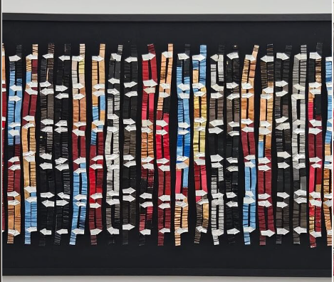
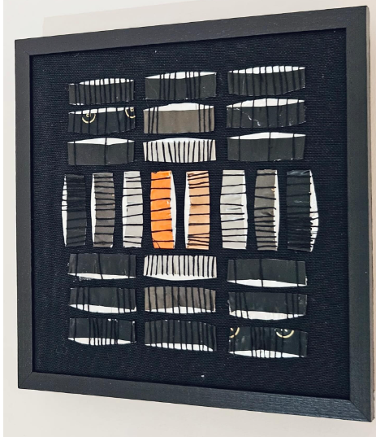
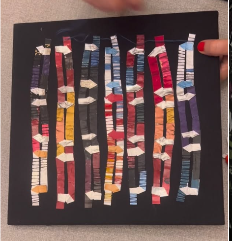

Explorando la materialidad, el ritmo y la poesía del arte textil contemporáneo.

Técnica mixta sobre lienzo negro.

Investigación sobre la línea textil.
Diseñadora gráfica y artista textil de Buenos Aires, especializada en el bordado como trazo poético.
Formada con Marian Cvik, su obra investiga la repetición y la materialidad reciclada (cápsulas y textiles).
Describe tu estado de ánimo o lo que buscas en el arte hoy:
"El arte textil es un diálogo entre el silencio de la tela y la voz del hilo."